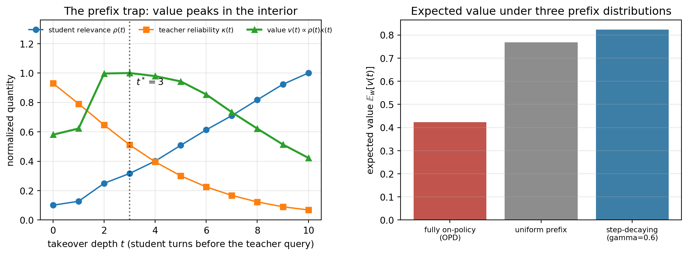

A frontier model can be enormously capable and almost unusably expensive to serve. A model with hundreds of billions of parameters answers well, but every query costs accelerator time, memory bandwidth, and latency that a real product cannot always afford. Knowledge distillation is the dominant technique for closing that gap: it trains a small, cheap student model to reproduce the behavior of a large, accurate teacher, transferring most of the teacher’s capability into a fraction of the parameters. The student is what you deploy; the teacher is what you learn from.
The central insight, due to Hinton, Vinyals, and Dean, is that a trained classifier’s full output distribution carries far more information than its single hard label. When a good digit classifier sees an image of a 7, it does not merely assert “7.” It assigns a small but nonzero probability to 1, a slightly larger one to 9, and almost nothing to 4. Those ratios encode the teacher’s learned similarity structure over classes, the part of its knowledge that the one-hot training label throws away. Hinton called this the dark knowledge in the soft probabilities, and distillation is, at bottom, the act of training the student to match it.
This chapter develops the technique in three layers. First the mathematics: temperature-scaled softmax, the distillation loss, and why the gradient recovers the right limit. Then runnable production code: we train a small teacher and distill it into a much smaller student on a CPU-feasible toy problem, reporting real accuracies, latencies, and compression. Finally the frontier case, distilling real language models such as DistilBERT, shown as the exact library invocation a reader would run on a GPU. The execution policy here is honest: the parts that fit on a CPU are executed and their printed numbers are real; the parts that need accelerators are shown, not run, and labeled as such.
242.1 Why Soft Targets Carry More Signal
Consider a \(K\)-class classifier producing logits \(z = (z_1, \dots, z_K)\). The usual training target for an example of class \(c\) is the one-hot vector \(e_c\), and standard cross-entropy pushes the predicted probability of class \(c\) toward one and everything else toward zero. That objective is correct but informationally thin. It says nothing about which wrong classes are plausible, and that relative plausibility is exactly the generalization structure a large model has discovered.
A teacher’s softmax output \(p^{\text{teacher}} = \operatorname{softmax}(z^{\text{teacher}})\) does encode it, but often too faintly to be useful. A confident teacher produces a distribution close to one-hot, with the informative inter-class ratios buried in probabilities like \(10^{-6}\) versus \(10^{-9}\). Distillation recovers that buried structure by softening the distribution with a temperature.
242.2 The Mathematics of Distillation
242.2.1 Temperature-Scaled Softmax
Introduce a temperature \(T > 0\) and define the softened distribution
At \(T = 1\) this is the ordinary softmax. As \(T\) grows, the logits are compressed toward each other and the distribution flattens, lifting the small probabilities of the runner-up classes into a range where they meaningfully affect the loss. As \(T \to \infty\) the distribution approaches uniform; as \(T \to 0\) it approaches the one-hot argmax. The temperature is the dial that sets how much dark knowledge the student is asked to match: a moderate \(T\) (typically between 2 and 8) exposes the inter-class structure without drowning it in noise.
242.2.2 The Distillation Objective
The student is trained against two targets at once. The soft target is the teacher’s softened distribution; the student matches it through a Kullback-Leibler divergence computed at the same temperature \(T\). The hard target is the ground-truth label, matched through ordinary cross-entropy at \(T = 1\). Writing \(q(T)\) for the student’s softened distribution and \(p(T)\) for the teacher’s, the loss for one example is
where \(\alpha \in [0, 1]\) balances the two terms. The soft term teaches the student the teacher’s similarity structure; the hard term anchors it to the verified truth so that the student does not merely inherit the teacher’s mistakes.
242.2.3 Why the \(T^2\) Factor
The \(T^2\) multiplier on the KL term is not cosmetic; it keeps the two losses on a comparable scale so a single learning rate works for both. The gradient of the softened cross-entropy with respect to a student logit \(v_i\) is
The explicit \(1/T\) means the soft-target gradient shrinks like \(1/T\), and a second factor of \(1/T\) enters through how the softened probabilities themselves respond to the logits, so the raw soft gradient scales like \(1/T^2\). Multiplying the soft loss by \(T^2\) cancels this, leaving the soft and hard gradients of comparable magnitude across temperatures. Without it, raising \(T\) would silently down-weight the distillation term, and the temperature would entangle two effects that should stay separate.
242.2.4 The High-Temperature Limit Recovers Logit Matching
A clean way to see what distillation does is to expand the high-temperature gradient. For large \(T\), \(\exp(z_i/T) \approx 1 + z_i/T\), and if the logits are zero-meaned within each example, the softened cross-entropy gradient reduces to
In this regime, minimizing the (temperature-corrected) soft loss is equivalent to matching the student’s logits to the teacher’s logits in squared error. Distillation at high temperature is therefore a soft regression of student logits onto teacher logits, which is exactly the “match the full response, not just the argmax” intuition made precise. At low temperature it falls back toward ordinary label matching, ignoring the dark knowledge. The useful regime sits in between.
242.3 Three Flavors of Distillation
The loss above is response-based distillation: the student matches the teacher’s output distribution. Two other families matter in practice.
Feature-based distillation matches intermediate representations. The student is trained so that a chosen hidden layer’s activations approximate the teacher’s, usually through a small learned projection plus a mean-squared-error penalty. This transfers how the teacher represents inputs, not only what it outputs, and is central to distilling deep networks where the final layer alone underspecifies the target.
Relation-based distillation matches relationships between examples or between layers, for instance the Gram matrix of pairwise similarities, so the student preserves the geometry of the teacher’s representation space rather than any single activation.
Production language-model distillation, including DistilBERT, combines response-based and feature-based terms: a soft-label KL on the output logits, plus losses that align the student’s hidden states and attention patterns with the teacher’s. The toy example below uses the response-based loss because it is the core mechanism and the one that runs comfortably on a CPU; the show-only language-model section uses the full combination.
242.4 On-Policy Distillation and the Privilege Illusion
All three flavors above are off-policy: the student learns on a fixed transfer set, matching the teacher on inputs the student did not choose. On-policy distillation (Agarwal et al. 2024) instead supervises trajectories the student itself samples, scoring each student-generated token against the teacher. This transfers capability more efficiently because the student is corrected exactly where its own distribution strays. Writing \(\Pi_S\) for the student policy and \(\mathcal{L}_n\) for a per-token divergence to the teacher (typically a reverse KL over the vocabulary), the on-policy objective is
where \(t_{<n}\) is the teacher’s conditioning on the student-generated prefix. A tempting way to sharpen the teacher’s signal is to feed privileged information (a hint, or the reference answer) to the teacher or the student. Yu et al. (2026) show this creates a failure mode they call the privilege illusion: the student now chases two different gaps at once, a transferable capability gap it can actually close, and an information-asymmetry gap it can only mimic, because at test time it will not have the privileged input. Conflating the two teaches the student to imitate a shortcut it cannot reproduce, and the problem is amplified by the non-uniformity of token-level supervision, where only a handful of tokens per sequence carry the decisive signal.
Their method, DOPD (dual on-policy distillation), routes each token’s supervision between a privileged teacher and a privileged student according to the log-probability advantage gap \(\big|\log \Pi_T(y_n) - \log \Pi_S(y_n)\big|\) and the two models’ relative confidence, yielding four regimes: light teacher distillation when the gap is small and both are confident; a weak stop-gradient self-regularizer when the gap is small but both are unsure; full-vocabulary Jensen-Shannon supervision (the strongest) when the gap is large and the teacher is confident; and a lighter, more self-referential update when the gap is large but it is the student, not the teacher, that is the more confident of the two. Each token thus receives supervision of a strength and source matched to what it can actually learn. Across eight language-model benchmarks DOPD recovers about \(89.8\%\) of the teacher-student capability gap, beating vanilla on-policy distillation by roughly 6 to 12 points depending on setting, with comparable gains carrying over to vision-language models.
242.5 Production Code
We now build the full pipeline on a problem small enough to execute on a CPU in seconds, yet rich enough to show distillation’s real payoff. The setup is the regime where distillation earns its keep: a strong teacher trained on plenty of data, a much smaller student, and only a handful of hard labels available to the student. The teacher supplies soft targets across a large transfer set of inputs the student has no labels for, and the student recovers most of the teacher’s accuracy at a fraction of the size.
242.5.1 Setup and Data
We use the scikit-learn handwritten digits dataset (1797 images, 64 features, 10 classes). The teacher trains on the full labeled training split. The student is allowed only 150 hard labels, but the teacher provides soft targets over the entire training pool. Everything is seeded for determinism.
Code
import timeimport numpy as npimport torchimport torch.nn as nnimport torch.nn.functional as Ffrom sklearn.datasets import load_digitsfrom sklearn.model_selection import train_test_splitfrom sklearn.preprocessing import StandardScalerSEED =0np.random.seed(SEED)torch.manual_seed(SEED)digits = load_digits()X = digits.data.astype(np.float32)y = digits.target.astype(np.int64)X_tr_full, X_te, y_tr_full, y_te = train_test_split( X, y, test_size=0.30, random_state=SEED, stratify=y)# The student is allowed only a small labeled subset of the training pool.sub_idx, _ = train_test_split( np.arange(len(X_tr_full)), train_size=150, random_state=SEED, stratify=y_tr_full)scaler = StandardScaler().fit(X_tr_full)X_tr_full = scaler.transform(X_tr_full).astype(np.float32)X_te = scaler.transform(X_te).astype(np.float32)to_t = torch.from_numpyX_full_t, y_full_t = to_t(X_tr_full), to_t(y_tr_full)X_te_t, y_te_t = to_t(X_te), to_t(y_te)# Mask marking which transfer-set points carry a usable hard label.labeled_mask = torch.zeros(len(X_tr_full), dtype=torch.bool)labeled_mask[sub_idx] =Trueprint(f"teacher train: {X_tr_full.shape[0]} labeled")print(f"student hard labels: {int(labeled_mask.sum())}")print(f"transfer set (soft targets): {X_tr_full.shape[0]}")print(f"test: {X_te.shape[0]} classes: {len(np.unique(y))}")
teacher train: 1257 labeled
student hard labels: 150
transfer set (soft targets): 1257
test: 540 classes: 10
242.5.2 Models and Training Utilities
The teacher is a two-hidden-layer MLP with width 256; the student is a single-hidden-layer MLP with width 32, roughly 35 times smaller. The helper functions cover ordinary cross-entropy training, accuracy, and a simple forward-pass latency measurement.
242.5.3 Teacher and From-Scratch Student Baselines
First we train the teacher on the full labeled set, then a from-scratch student of the same small architecture on only the 150 hard labels. The from-scratch student is the baseline distillation must beat.
This is the heart of the chapter, the temperature-scaled KL plus masked hard-label cross-entropy, exactly as derived above. The teacher’s soft targets are computed once over the entire transfer set. The KL term applies to every transfer point; the cross-entropy term applies only where a hard label exists.
Code
def distill(student, teacher, X, y_hard, mask, T=4.0, alpha=0.7, epochs=200, lr=5e-3):with torch.no_grad(): teacher.eval() soft_targets = F.softmax(teacher(X) / T, dim=1) # dark knowledge opt = torch.optim.Adam(student.parameters(), lr=lr) student.train()for _ inrange(epochs): opt.zero_grad() s = student(X)# Soft term: KL at temperature T, rescaled by T^2 (see derivation). kd = F.kl_div(F.log_softmax(s / T, dim=1), soft_targets, reduction="batchmean") * (T * T)# Hard term: ordinary cross-entropy, only on labeled points. ce = F.cross_entropy(s[mask], y_hard[mask]) (alpha * kd + (1.0- alpha) * ce).backward() opt.step()return studenttorch.manual_seed(SEED)student_kd = distill(MLP(64, 32, 10, depth=1), teacher, X_full_t, y_full_t, labeled_mask, T=4.0, alpha=0.7, epochs=200)acc_kd = accuracy(student_kd, X_te_t, y_te_t)print(f"student(distilled)params={count_params(student_kd):>6} test_acc={acc_kd:.4f}")
student(distilled)params= 2410 test_acc=0.9685
242.5.5 Results: Accuracy, Compression, and Latency
The headline comparison is teacher versus from-scratch student versus distilled student, alongside the compression ratio and the latency advantage of the small model.
The distilled student, with roughly 35 times fewer parameters and a fraction of the inference latency, recovers most of the accuracy gap between the from-scratch baseline and the teacher, using only 150 hard labels plus the teacher’s soft targets over the unlabeled pool. That is the practical promise of distillation in one table.
242.5.6 The Role of Temperature
Temperature is the most important distillation hyperparameter after the loss weight. The sweep below distills the same student at several temperatures, holding everything else fixed, so the effect is isolated.
Code
print("Temperature sweep (alpha=0.7, same seed and budget):")for T in [1.0, 2.0, 4.0, 8.0]: torch.manual_seed(SEED) s = distill(MLP(64, 32, 10, depth=1), teacher, X_full_t, y_full_t, labeled_mask, T=T, alpha=0.7, epochs=200)print(f" T={T:>4} test_acc={accuracy(s, X_te_t, y_te_t):.4f}")
Temperature sweep (alpha=0.7, same seed and budget):
T= 1.0 test_acc=0.9722
T= 2.0 test_acc=0.9722
T= 4.0 test_acc=0.9685
T= 8.0 test_acc=0.9574
The best temperature is dataset and model dependent, which is why it is tuned rather than fixed. On this easy problem a low to moderate temperature works well; on harder tasks with more confident teachers, a higher temperature is usually needed to surface the inter-class structure. The point the sweep makes is that temperature genuinely matters and must be searched, not assumed.
242.6 Distilling Real Language Models (Requires GPU)
Everything above runs on a CPU because the models are tiny. Distilling a real language model is the same mathematics at a different scale, and it needs an accelerator. The blocks in this section are shown, not executed. They are the actual mature open-source invocations a reader would run on a GPU.
The reference result is DistilBERT, which retains about 97 percent of BERT-base’s language-understanding performance with roughly 40 percent fewer parameters and 60 percent faster inference. It is trained with a triple objective: a soft-label distillation loss on the teacher’s output distribution, the original masked-language-modeling loss, and a cosine-embedding loss that aligns the student’s hidden states with the teacher’s (the feature-based term discussed earlier).
The soft-label loss is exactly the temperature-scaled KL from this chapter, written here in plain PyTorch against teacher and student logits.
# Requires GPU and a pretrained teacher. Shown, not executed.import torchimport torch.nn.functional as Fdef distillation_loss(student_logits, teacher_logits, labels, T=2.0, alpha=0.5): soft = F.kl_div( F.log_softmax(student_logits / T, dim=-1), F.softmax(teacher_logits / T, dim=-1), reduction="batchmean", ) * (T * T) hard = F.cross_entropy(student_logits, labels)return alpha * soft + (1.0- alpha) * hard
The Hugging Face ecosystem provides mature, free, open-source tooling for the full pipeline. A response-based fine-tuning distillation can be expressed by subclassing the standard Trainer so its loss compares student logits to a frozen teacher’s logits on the same batch.
For instruction-style and generative distillation, the same idea takes a different surface. A modern recipe is sequence-level distillation, where a strong teacher generates outputs that become supervised training data for the student, the mechanism behind reasoning-trace distillation discussed in the reasoning-models chapter. The open-source TRL library provides a GKDTrainer (generalized knowledge distillation) for token-level distillation of generative models.
# Requires GPU. Shown, not executed. Open-source: trl + peft.from trl import GKDTrainer, GKDConfigfrom peft import LoraConfig# 8-bit teacher loading shown for reference only. Do not run on CPU.# from transformers import BitsAndBytesConfig# bnb = BitsAndBytesConfig(load_in_8bit=True)trainer = GKDTrainer( model="student-base", # small generative student teacher_model="teacher-large", # frozen strong teacher args=GKDConfig(output_dir="gkd-out", temperature=2.0, lmbda=0.5, beta=0.5, num_train_epochs=1), peft_config=LoraConfig(r=16, lora_alpha=32, task_type="CAUSAL_LM"), train_dataset=None, # your prompt set)trainer.train()
The arithmetic that justifies all of this is simple. If distillation cuts parameters by 40 percent and latency by 60 percent while keeping accuracy within a few points, then at serving scale it cuts the accelerator fleet and the per-query cost by a similar fraction. That recurring saving, paid once in training compute, is why distillation is standard practice for shipping large models.
242.7 SEED: Distilling Self-Knowledge to Densify Sparse RL
On-policy distillation, as introduced above, still assumes two models: a student that samples and a stronger teacher that scores. Agentic reinforcement learning poses a harder version of the same supervision problem without any obvious teacher on hand. An LLM agent trained with outcome-based RL sees only a sparse reward at the end of a long trajectory, one scalar for a sequence of many actions, so the credit-assignment signal over intermediate tokens is thin exactly where the decisive choices were made. SEED (Self-Evolving On-Policy Distillation) of Wu et al. (2026) closes this gap with a move that reframes what distillation even is: the same policy is both actor and teacher, and it distills structured self-knowledge back into itself to densify the sparse RL signal.
The mechanism is a two-stage self-evolving loop. In the first stage the policy learns to analyze its own completed trajectories and emit hindsight skills, natural-language descriptions of reusable workflows, decisive observations, or failure-avoidance rules distilled from what actually happened in an episode. In the second stage this analysis capability is turned on-policy: the latest checkpoint simultaneously acts (collecting trajectories) and analyzes (extracting skills from them), so the hindsight supervision improves in lockstep with the policy rather than lagging behind a frozen teacher.
The distillation signal itself comes from a rescoring trick that maps cleanly onto the temperature-free on-policy objective of the previous section. The sampled actions are held fixed, then re-scored under two contexts: a skill-augmented context, in which the policy conditions on the hindsight skill, and the ordinary interaction context. The skill-augmented distribution plays the role of \(p(T)\), the teacher target, and the plain-context distribution plays the role of \(q(T)\), the student, except that both come from one model. Their per-token divergence is a dense token-level on-policy distillation loss, one number for every action rather than one scalar for the whole rollout. A confidence gate \(g = \sigma(\beta_{\text{opd}} \cdot \Delta)\) on the detached log-probability shift \(\Delta\) concentrates this supervision on the tokens the skill actually endorses. The full objective adds it to the ordinary RL loss, \(\mathcal{L}_{\text{SEED}} = \mathcal{L}_{\text{RL}} + \lambda_{\text{opd}}\,\mathcal{L}_{\text{OPD}}\), so the dense self-distillation term and the sparse outcome reward are optimized jointly.
The toy below strips SEED to that core contrast. It treats one model’s skill-augmented next-token distribution as the teacher target and its plain-context distribution as the student, computes the dense per-token forward-KL, and sets it beside the single sparse scalar an outcome reward would provide over the same trajectory.
Code
import torchimport torch.nn.functional as Ftorch.manual_seed(0)# A toy generated trajectory of T actions (tokens) over a small vocab V.T_len, V =8, 6# "teacher" logits: the SAME policy's next-token distribution when its context# is augmented with a hindsight skill (a reusable workflow or failure-avoidance# rule the policy wrote about its own completed trajectories).skill_logits = torch.randn(T_len, V)# "student" logits: the same policy scoring the same actions in the plain# context, with no skill attached. On-policy: both score tokens the policy# itself sampled, so there is no second model anywhere in the loop.plain_logits = skill_logits +0.6* torch.randn(T_len, V)p_skill = F.softmax(skill_logits, dim=-1) # skill-augmented targetlogq_plain = F.log_softmax(plain_logits, dim=-1) # plain-context student# Dense per-token forward-KL on-policy distillation loss: one value per token.per_token_kl = (p_skill * (p_skill.clamp_min(1e-12).log() - logq_plain)).sum(-1)opd_loss = per_token_kl.mean()# The outcome-based RL signal is a SINGLE sparse scalar for the whole rollout.outcome_reward = torch.tensor(1.0) # e.g. "task solved", delivered only at the enddense = [round(x, 4) for x in per_token_kl.tolist()]print("dense per-token OPD loss:", dense)print(f"mean OPD loss (dense) : {opd_loss.item():.4f}")print(f"sparse outcome reward : {outcome_reward.item():.1f} (1 scalar for {T_len} tokens)")print(f"supervision density : {T_len} dense token signals vs 1 sparse trajectory signal")
dense per-token OPD loss: [0.0538, 0.3829, 0.3819, 0.13, 0.2124, 0.0353, 0.1582, 0.0328]
mean OPD loss (dense) : 0.1734
sparse outcome reward : 1.0 (1 scalar for 8 tokens)
supervision density : 8 dense token signals vs 1 sparse trajectory signal
The printed vector is the point: where outcome-based RL hands the optimizer a single number to explain an entire episode, the skill-augmented rescoring produces a graded signal at every action, turning the flat trajectory reward into per-token guidance that says which moves the policy’s own hindsight would have reinforced.
The full training loop, which needs an RL stack rather than a handful of tensors, has the following shape. The reference implementation (github.com/jinyangwu/SEED, MIT licensed) is built on veRL.
# conceptual sketch; full training needs veRL + vLLM + a GPU cluster; shown, not executedfor step inrange(num_rl_steps):# Stage 1: the policy analyzes its OWN completed trajectories and emits# natural-language hindsight skills (reusable workflows, decisive# observations, failure-avoidance rules). Same checkpoint acts and analyzes. trajectories = policy.rollout(prompts) # actor role skills = policy.analyze(trajectories) # analyzer role (self)# Stage 2: re-score the SAME sampled actions in skill-augmented vs. plain# contexts to produce dense token-level on-policy distillation targets. logp_skill = policy.score(trajectories, context=skills) # teacher target logp_plain = policy.score(trajectories, context=None) # student gate = torch.sigmoid(beta_opd * (logp_skill - logp_plain).detach()) opd_loss = gate * per_token_kl(logp_skill.detach(), logp_plain)# Combine the dense self-distillation signal with the sparse outcome reward. rl_loss = grpo_loss(trajectories, outcome_rewards) (rl_loss + lambda_opd * opd_loss.mean()).backward() optimizer.step()
Reported across text-based and vision-based agent tasks (ALFWorld, WebShop, search-based QA, EZPoints, Sokoban), SEED improves both performance and sample efficiency and generalizes to unseen scenarios, matching full-data outcome-only baselines with a fraction of the training data and transferring its learned strategies to held-out tasks. Placed against the rest of this chapter, it is a useful reminder that distillation is not always a teacher handing knowledge to a separate student. Here it is a model distilling structured self-knowledge back into itself, a bridge between knowledge distillation and agentic RL that inherits the dense token-level supervision of on-policy distillation without requiring a stronger model to supply it.
242.8 ReOPD: The Prefix Trap in Multi-Turn Distillation
SEED (Section 242.7) attacks the density of the supervision signal: one sparse trajectory reward becomes one number per token. Liao et al. (2026) attack a different and prior question in the same agentic setting, namely where in the interaction history the teacher should be queried at all. Their target is fully online multi-turn on-policy distillation (OPD), in which an LLM agent acts over many turns and the student imitates a teacher across those histories. That procedure is brutally expensive for a reason that has nothing to do with model size: every update demands a fresh student rollout through the live environment, so each gradient step drags a chain of real tool calls behind it, and then the teacher must be queried at each newly visited history. Their proposal, ReOPD (Replayed-Prefix On-Policy Distillation), is an off-environment substitute. A bank of teacher trajectories is collected once; thereafter the student acts only at selected steps inside a replayed prefix, and the teacher supplies dense per-step supervision without a single new environment interaction.
The intellectual core is the failure mode they name the prefix trap. Let \(t\) index the takeover depth: the number of turns the student itself generates, starting from a replayed teacher prefix, before the teacher is asked for a target. Two quantities move in opposite directions along this one axis. Student relevance\(\rho(t)\) increases with \(t\), because a history containing more student-generated turns sits closer to the student’s own occupancy measure, which is exactly the distribution the student will face at deployment. Teacher reliability\(\kappa(t)\) decreases with \(t\), because that same drift carries the query point off the teacher’s own occupancy, where its per-step target degrades from expertise into guesswork. The distillation value of a query at depth \(t\) is therefore a product of two opposing terms,
\[
v(t) \;\propto\; \rho(t)\,\kappa(t),
\]
and a product of an increasing and a decreasing factor is maximized in the interior. Setting \(v'(t) = 0\) gives the balance-of-elasticities condition
which says: keep pushing the takeover deeper only while relevance is growing proportionally faster than reliability is decaying. This is the two-sided distribution shift between student occupancy and teacher reliability, and it is why “make the histories as on-policy as possible” is the wrong instinct. A useful closed form makes the point sharp. Take the exponential surrogate \(\rho(t) = 1 - e^{-t/a}\) and \(\kappa(t) = e^{-t/b}\), where \(a\) measures how fast the student’s own distribution is reached and \(b\) how robust the teacher is off-distribution. Then
which is finite for every finite \(b\). The fully on-policy extreme \(t = H\) is optimal only in the limit \(b \to \infty\), that is, only for a teacher whose targets never degrade off its own support. No real teacher qualifies.
Solving for the optimal prefix distribution directly would require estimating \(\kappa\), which means knowing where the teacher is unreliable, which is the hard part. ReOPD instead adopts a step-decaying sampling schedule, a geometric prior \(w(t) \propto \gamma^{\,t-1}\) that concentrates mass on early, lower-shift prefixes. It has one hyperparameter, needs no reliability estimate, and has mean takeover depth \(1/(1-\gamma)\), so \(\gamma\) doubles as the cost dial: shallow takeovers are cheap because the student generates few turns and the environment is never touched.
The simulation below makes all of this concrete in a small multi-turn environment. It builds the relevance curve from actual occupancy measures and models reliability as decaying with distance from the teacher’s own occupancy, locates the interior optimum, and prices three prefix distributions against each other. Only \(\rho\) is measured, as the overlap between the mixed prefix distribution and the student’s occupancy; \(\kappa\) is an assumed kernel, so with \(\rho\) increasing and \(\kappa\) decreasing by construction the interior optimum is fixed before the code runs and illustrates the algebra above rather than supplying independent evidence for it.
import numpy as npimport matplotlib.pyplot as plt# A small multi-turn tool-use environment: a 9x9 grid, start (0,0), goal (8,8).# Every turn is one live environment interaction, the cost ReOPD refuses to pay.G, H =9, 10# grid side, and turns per episodeS = G * GMOVES = [(1, 0), (0, 1), (-1, 0), (0, -1)]def transition(eps):"""State-to-state matrix for an eps-greedy goal-seeking policy.""" T = np.zeros((S, S))for s inrange(S): x, y = s % G, s // G good = [a for a, (dx, dy) inenumerate(MOVES)if (dx >0and x < G -1) or (dy >0and y < G -1)] good = good orlist(range(4)) p = np.full(4, eps /4.0) p[good] += (1.0- eps) /len(good)for a, (dx, dy) inenumerate(MOVES): nx, ny =min(max(x + dx, 0), G -1), min(max(y + dy, 0), G -1) T[s, ny * G + nx] += p[a]return Tdef push(d, T, n):for _ inrange(n): d = d @ Treturn dT_teacher = transition(0.02) # near-optimal teacherT_student = transition(0.70) # weak student that drifts off the diagonald0 = np.zeros(S); d0[0] =1.0# Takeover depth t: replay the teacher prefix for H - t turns, let the student act# for t turns, then query the teacher at the resulting history. t = H is fully# online OPD; t = 0 is pure teacher replay with no student input at all.occ_teacher = push(d0, T_teacher, H) # teacher occupancy at turn Hocc_student = push(d0, T_student, H) # student occupancy at turn H# The teacher's per-step target is trustworthy in proportion to how much of its# OWN occupancy sits at that history. Off its support it is extrapolating.reliab = occ_teacher / (occ_teacher +0.04* occ_teacher.max())reliab /= reliab.max()ts = np.arange(H +1)rho = np.zeros(H +1) # student relevancekappa = np.zeros(H +1) # teacher reliabilityfor t in ts: m = push(push(d0, T_teacher, H - t), T_student, t) rho[t] = np.minimum(m, occ_student).sum() # overlap with student occupancy kappa[t] =float(m @ reliab) # teacher reliability therevalue = rho * kappavalue /= value.max() # report value as a fraction of the peakt_star =int(np.argmax(value))# Three prefix distributions over admissible takeover depths t in {1, ..., H}.gamma, tk =0.6, ts[1:]schedules = {"fully on-policy (OPD)": np.eye(H)[H -1],"uniform prefix": np.ones(H) / H,f"step-decaying (gamma={gamma})": (gamma ** (tk -1)) / (gamma ** (tk -1)).sum(),}print(f"prefix trap: rho rises {rho[1]:.3f} -> {rho[H]:.3f}, "f"kappa falls {kappa[1]:.3f} -> {kappa[H]:.3f}")print(f"interior optimum at takeover depth t* = {t_star} of {H}\n")print(f"{'prefix schedule':<30}{'E[v]':>7}{'E[t]':>7}{'env steps':>11}{'per rollout':>13}")for name, w in schedules.items(): Ev, Et =float(w @ value[1:]), float(w @ tk) env = H if name.startswith("fully") else0print(f"{name:<30}{Ev:>7.3f}{Et:>7.2f}{env:>11d}{H / Et:>12.1f}x")Et_re =float(schedules[f"step-decaying (gamma={gamma})"] @ tk)print(f"\nOPD per rollout: {H} live environment interactions, {H} teacher queries")print(f"ReOPD per rollout: 0 live environment interactions, "f"{Et_re:.2f} student turns on a replayed prefix")print(f"environment interactions avoided per rollout: {H} "f"({H / Et_re:.1f}x fewer sequential agent turns)")fig, axes = plt.subplots(1, 2, figsize=(10.5, 4))ax = axes[0]ax.plot(ts, rho, "o-", label=r"student relevance $\rho(t)$")ax.plot(ts, kappa, "s-", label=r"teacher reliability $\kappa(t)$")ax.plot(ts, value, "^-", lw=2.2, label=r"value $v(t)\propto\rho(t)\kappa(t)$")ax.axvline(t_star, ls=":", c="k", alpha=0.6)ax.annotate(f"$t^*={t_star}$", (t_star, value[t_star]), textcoords="offset points", xytext=(7, -13))ax.set_xlabel("takeover depth $t$ (student turns before the teacher query)")ax.set_ylabel("normalized quantity")ax.set_title("The prefix trap: value peaks in the interior")ax.set_ylim(0, 1.36)ax.legend(fontsize=7.5, loc="upper center", ncol=3, frameon=False)ax.grid(True, alpha=0.3)ax = axes[1]names =list(schedules)ax.bar(range(3), [float(schedules[n] @ value[1:]) for n in names], color=["#c1554d", "#8d8d8d", "#3d7ea6"])ax.set_xticks(range(3))ax.set_xticklabels([n.replace(" (", "\n(") for n in names], fontsize=8)ax.set_ylabel(r"expected value $\mathbb{E}_w[v(t)]$")ax.set_title("Expected value under three prefix distributions")ax.grid(True, axis="y", alpha=0.3)fig.tight_layout(); plt.show()
prefix trap: rho rises 0.127 -> 1.000, kappa falls 0.791 -> 0.068
interior optimum at takeover depth t* = 3 of 10
prefix schedule E[v] E[t] env steps per rollout
fully on-policy (OPD) 0.423 10.00 10 1.0x
uniform prefix 0.769 5.50 0 1.8x
step-decaying (gamma=0.6) 0.823 2.44 0 4.1x
OPD per rollout: 10 live environment interactions, 10 teacher queries
ReOPD per rollout: 0 live environment interactions, 2.44 student turns on a replayed prefix
environment interactions avoided per rollout: 10 (4.1x fewer sequential agent turns)

Figure 242.1: Left: student relevance rises with takeover depth while teacher reliability falls, so their product peaks in the interior rather than at the fully on-policy extreme. Right: the step-decaying prefix schedule captures the most expected distillation value while touching the environment zero times.
The printed table is the argument in miniature. Pushing all the mass to the fully on-policy extreme buys maximal relevance and lands on the worst expected value of the three, because the teacher is being interrogated precisely where its answers have decayed, and it pays ten live environment interactions per rollout to get there. The uniform schedule recovers most of the attainable value at zero environment cost. The step-decaying schedule does best on both axes at once: the highest expected value, zero tool calls during student training, and a mean takeover depth of roughly two and a half turns against the ten-turn online rollout. Separately, Liao et al. (2026) report an at-least-fourfold per-rollout speedup across mathematical reasoning with Python and search environments, over several teacher and student scales, while preserving or improving OPD-level accuracy. The resemblance between those two numbers is a coincidence and nothing should be read into it: the ratio printed above is a count of agent turns that follows arithmetically from the arbitrary settings \(\gamma = 0.6\) and \(H = 10\), while theirs is a measured wall-clock speedup on real workloads. The simulation shows the direction of the effect, not its magnitude.
This lands squarely on the chapter’s running question of what distillation costs and what it buys. The earlier sections priced distillation in teacher forward passes over a transfer set, which is why caching soft targets is standard. Agentic distillation adds a second and far more punishing bill: sequential, non-cacheable, latency-bound interactions with a real environment. ReOPD’s contribution is to notice that this bill is not intrinsic. Because teacher trajectories are reusable and the reliable supervision lives in the shallow part of the history anyway, the environment can be paid for once and then amortized indefinitely. What began as a per-update cost becomes a fixed asset, and the transfer set of the earlier sections reappears in agentic form as a bank of replayable prefixes.
242.9 Pitfalls and When to Use
The teacher caps the student. Distillation transfers the teacher’s knowledge, including its biases and errors. A student cannot reliably exceed a weak teacher on the distilled task, and a teacher that is systematically wrong will teach the student to be confidently wrong in the same way. Keep the hard-label term (a nonzero \(1 - \alpha\)) so the student stays anchored to ground truth where it exists.
Temperature and loss weight need tuning. As the sweep showed, the temperature \(T\) and the balance \(\alpha\) materially change the result, and the best values depend on the dataset and on how confident the teacher is. Treat them as hyperparameters to search, not constants to copy. A too-low temperature wastes the dark knowledge; a too-high one drowns it in near-uniform noise.
The transfer set is doing the heavy lifting. Distillation’s largest gains in this chapter came not from the loss alone but from applying the teacher’s soft targets across a large pool of unlabeled inputs. If your transfer set is tiny or unrepresentative of deployment inputs, the student has little to learn from. Distillation is most powerful when unlabeled data is plentiful and labels are scarce.
Capacity gaps can hurt. A student that is too small relative to the teacher may be unable to fit the soft targets at all, and an extreme teacher-student gap can make distillation worse than training the student directly. Intermediate “teacher assistant” models or feature-based losses help bridge very large gaps.
Distillation is not free at training time. You pay for teacher inference over the entire transfer set every epoch (or once, if you cache the soft targets, which is the standard optimization). For very large teachers this teacher-inference cost dominates, so caching soft targets and reusing them across epochs is usually essential.
When to reach for it. Distillation is the right tool when you have a strong but expensive model and a hard latency, memory, or cost ceiling at serving time; when you have abundant unlabeled data in the deployment distribution; or when you want to compress a capability that is hard to learn directly from labels (reasoning traces, multi-step generation, calibrated probabilities). It composes naturally with the other compression techniques: quantization shrinks the weights’ precision and pruning removes parameters, while distillation chooses a smaller architecture and trains it to behave like the large one. In production pipelines the three are routinely stacked.
242.10 References
Hinton, G., Vinyals, O., and Dean, J. “Distilling the Knowledge in a Neural Network.” 2015. https://arxiv.org/abs/1503.02531
Sanh, V., Debut, L., Chaumond, J., and Wolf, T. “DistilBERT, a distilled version of BERT: smaller, faster, cheaper and lighter.” 2019. https://arxiv.org/abs/1910.01108
Romero, A. et al. “FitNets: Hints for Thin Deep Nets” (feature-based distillation). 2015. https://arxiv.org/abs/1412.6550
Park, W. et al. “Relational Knowledge Distillation.” 2019. https://arxiv.org/abs/1904.05068
Gou, J. et al. “Knowledge Distillation: A Survey.” International Journal of Computer Vision, 2021. https://arxiv.org/abs/2006.05525
Kim, Y. and Rush, A. M. “Sequence-Level Knowledge Distillation.” 2016. https://arxiv.org/abs/1606.07947
Agarwal, R. et al. “On-Policy Distillation of Language Models” (generalized KD). 2024. https://arxiv.org/abs/2306.13649
Mirzadeh, S. et al. “Improved Knowledge Distillation via Teacher Assistant.” 2020. https://arxiv.org/abs/1902.03393
Yu, X. et al. “DOPD: Dual On-policy Distillation.” 2026. https://arxiv.org/abs/2606.30626
Wu, J. et al. “SEED: Self-Evolving On-Policy Distillation for Agentic Reinforcement Learning.” 2026. https://arxiv.org/abs/2607.14777
Liao, B., Dong, H., Monz, C., Xu, X., Dong, L., and Wei, F. “Multi-Turn On-Policy Distillation with Prefix Replay.” 2026. https://arxiv.org/abs/2607.04763
Liao, Baohao, Hanze Dong, Christof Monz, Xinxing Xu, Li Dong, and Furu Wei. 2026. “Multi-Turn on-Policy Distillation with Prefix Replay.”arXiv Preprint arXiv:2607.04763.
Wu, Jinyang, Shuo Yang, Zhengxi Lu, Fan Zhang, Yuhao Shen, Lang Feng, Haoran Luo, et al. 2026. “SEED: Self-Evolving on-Policy Distillation for Agentic Reinforcement Learning.”arXiv Preprint arXiv:2607.14777.
Source Code
# Knowledge Distillation {#sec-knowledge-distillation}A frontier model can be enormously capable and almost unusably expensive to serve. A model with hundreds of billions of parameters answers well, but every query costs accelerator time, memory bandwidth, and latency that a real product cannot always afford. **Knowledge distillation** is the dominant technique for closing that gap: it trains a small, cheap **student** model to reproduce the behavior of a large, accurate **teacher**, transferring most of the teacher's capability into a fraction of the parameters. The student is what you deploy; the teacher is what you learn from.The central insight, due to Hinton, Vinyals, and Dean, is that a trained classifier's *full output distribution* carries far more information than its single hard label. When a good digit classifier sees an image of a 7, it does not merely assert "7." It assigns a small but nonzero probability to 1, a slightly larger one to 9, and almost nothing to 4. Those ratios encode the teacher's learned similarity structure over classes, the part of its knowledge that the one-hot training label throws away. Hinton called this the **dark knowledge** in the soft probabilities, and distillation is, at bottom, the act of training the student to match it.This chapter develops the technique in three layers. First the mathematics: temperature-scaled softmax, the distillation loss, and why the gradient recovers the right limit. Then runnable production code: we train a small teacher and distill it into a much smaller student on a CPU-feasible toy problem, reporting real accuracies, latencies, and compression. Finally the frontier case, distilling real language models such as DistilBERT, shown as the exact library invocation a reader would run on a GPU. The execution policy here is honest: the parts that fit on a CPU are executed and their printed numbers are real; the parts that need accelerators are shown, not run, and labeled as such.## Why Soft Targets Carry More SignalConsider a $K$-class classifier producing logits $z = (z_1, \dots, z_K)$. The usual training target for an example of class $c$ is the one-hot vector $e_c$, and standard cross-entropy pushes the predicted probability of class $c$ toward one and everything else toward zero. That objective is correct but informationally thin. It says nothing about *which* wrong classes are plausible, and that relative plausibility is exactly the generalization structure a large model has discovered.A teacher's softmax output $p^{\text{teacher}} = \operatorname{softmax}(z^{\text{teacher}})$ does encode it, but often too faintly to be useful. A confident teacher produces a distribution close to one-hot, with the informative inter-class ratios buried in probabilities like $10^{-6}$ versus $10^{-9}$. Distillation recovers that buried structure by **softening** the distribution with a temperature.## The Mathematics of Distillation### Temperature-Scaled SoftmaxIntroduce a temperature $T > 0$ and define the softened distribution$$p_i(T) = \frac{\exp(z_i / T)}{\sum_{j=1}^{K} \exp(z_j / T)}.$$At $T = 1$ this is the ordinary softmax. As $T$ grows, the logits are compressed toward each other and the distribution flattens, lifting the small probabilities of the runner-up classes into a range where they meaningfully affect the loss. As $T \to \infty$ the distribution approaches uniform; as $T \to 0$ it approaches the one-hot argmax. The temperature is the dial that sets how much dark knowledge the student is asked to match: a moderate $T$ (typically between 2 and 8) exposes the inter-class structure without drowning it in noise.### The Distillation ObjectiveThe student is trained against two targets at once. The **soft** target is the teacher's softened distribution; the student matches it through a Kullback-Leibler divergence computed at the same temperature $T$. The **hard** target is the ground-truth label, matched through ordinary cross-entropy at $T = 1$. Writing $q(T)$ for the student's softened distribution and $p(T)$ for the teacher's, the loss for one example is$$\mathcal{L} = \alpha \, T^2 \, \mathrm{KL}\!\big(p(T) \,\|\, q(T)\big) \;+\; (1 - \alpha)\, \mathrm{CE}\!\big(e_c, q(1)\big),$$where $\alpha \in [0, 1]$ balances the two terms. The soft term teaches the student the teacher's similarity structure; the hard term anchors it to the verified truth so that the student does not merely inherit the teacher's mistakes.### Why the $T^2$ FactorThe $T^2$ multiplier on the KL term is not cosmetic; it keeps the two losses on a comparable scale so a single learning rate works for both. The gradient of the softened cross-entropy with respect to a student logit $v_i$ is$$\frac{\partial}{\partial v_i} \, \mathrm{CE}\!\big(p(T), q(T)\big) = \frac{1}{T}\big(q_i(T) - p_i(T)\big).$$The explicit $1/T$ means the soft-target gradient shrinks like $1/T$, and a second factor of $1/T$ enters through how the softened probabilities themselves respond to the logits, so the raw soft gradient scales like $1/T^2$. Multiplying the soft loss by $T^2$ cancels this, leaving the soft and hard gradients of comparable magnitude across temperatures. Without it, raising $T$ would silently down-weight the distillation term, and the temperature would entangle two effects that should stay separate.### The High-Temperature Limit Recovers Logit MatchingA clean way to see what distillation does is to expand the high-temperature gradient. For large $T$, $\exp(z_i/T) \approx 1 + z_i/T$, and if the logits are zero-meaned within each example, the softened cross-entropy gradient reduces to$$\frac{\partial \mathcal{L}_{\text{soft}}}{\partial v_i} \approx \frac{1}{K T^2}\big(v_i - z_i\big).$$In this regime, minimizing the (temperature-corrected) soft loss is equivalent to **matching the student's logits to the teacher's logits** in squared error. Distillation at high temperature is therefore a soft regression of student logits onto teacher logits, which is exactly the "match the full response, not just the argmax" intuition made precise. At low temperature it falls back toward ordinary label matching, ignoring the dark knowledge. The useful regime sits in between.## Three Flavors of DistillationThe loss above is **response-based** distillation: the student matches the teacher's output distribution. Two other families matter in practice.- **Feature-based** distillation matches intermediate representations. The student is trained so that a chosen hidden layer's activations approximate the teacher's, usually through a small learned projection plus a mean-squared-error penalty. This transfers *how* the teacher represents inputs, not only *what* it outputs, and is central to distilling deep networks where the final layer alone underspecifies the target.- **Relation-based** distillation matches relationships between examples or between layers, for instance the Gram matrix of pairwise similarities, so the student preserves the geometry of the teacher's representation space rather than any single activation.Production language-model distillation, including DistilBERT, combines response-based and feature-based terms: a soft-label KL on the output logits, plus losses that align the student's hidden states and attention patterns with the teacher's. The toy example below uses the response-based loss because it is the core mechanism and the one that runs comfortably on a CPU; the show-only language-model section uses the full combination.## On-Policy Distillation and the Privilege IllusionAll three flavors above are *off-policy*: the student learns on a fixed transfer set, matching the teacher on inputs the student did not choose. **On-policy distillation** (Agarwal et al. 2024) instead supervises trajectories the student itself samples, scoring each student-generated token against the teacher. This transfers capability more efficiently because the student is corrected exactly where its own distribution strays. Writing $\Pi_S$ for the student policy and $\mathcal{L}_n$ for a per-token divergence to the teacher (typically a reverse KL over the vocabulary), the on-policy objective is$$\mathbb{E}_{x\sim\mathcal{D}}\;\mathbb{E}_{y\sim \Pi_S}\!\left[\frac{1}{|y|}\sum_{n=1}^{|y|} \mathcal{L}_n\big(y_n;\, t_{<n}\big)\right],$$where $t_{<n}$ is the teacher's conditioning on the student-generated prefix. A tempting way to sharpen the teacher's signal is to feed *privileged* information (a hint, or the reference answer) to the teacher or the student. Yu et al. (2026) show this creates a failure mode they call the **privilege illusion**: the student now chases two different gaps at once, a *transferable capability gap* it can actually close, and an *information-asymmetry gap* it can only mimic, because at test time it will not have the privileged input. Conflating the two teaches the student to imitate a shortcut it cannot reproduce, and the problem is amplified by the non-uniformity of token-level supervision, where only a handful of tokens per sequence carry the decisive signal.Their method, **DOPD (dual on-policy distillation)**, routes each token's supervision between a *privileged teacher* and a *privileged student* according to the log-probability advantage gap $\big|\log \Pi_T(y_n) - \log \Pi_S(y_n)\big|$ and the two models' relative confidence, yielding four regimes: light teacher distillation when the gap is small and both are confident; a weak stop-gradient self-regularizer when the gap is small but both are unsure; full-vocabulary Jensen-Shannon supervision (the strongest) when the gap is large and the teacher is confident; and a lighter, more self-referential update when the gap is large but it is the student, not the teacher, that is the more confident of the two. Each token thus receives supervision of a strength and source matched to what it can actually learn. Across eight language-model benchmarks DOPD recovers about $89.8\%$ of the teacher-student capability gap, beating vanilla on-policy distillation by roughly 6 to 12 points depending on setting, with comparable gains carrying over to vision-language models.## Production CodeWe now build the full pipeline on a problem small enough to execute on a CPU in seconds, yet rich enough to show distillation's real payoff. The setup is the regime where distillation earns its keep: a strong teacher trained on plenty of data, a much smaller student, and only a handful of hard labels available to the student. The teacher supplies soft targets across a large **transfer set** of inputs the student has no labels for, and the student recovers most of the teacher's accuracy at a fraction of the size.### Setup and DataWe use the scikit-learn handwritten digits dataset (1797 images, 64 features, 10 classes). The teacher trains on the full labeled training split. The student is allowed only 150 hard labels, but the teacher provides soft targets over the entire training pool. Everything is seeded for determinism.```{python}import timeimport numpy as npimport torchimport torch.nn as nnimport torch.nn.functional as Ffrom sklearn.datasets import load_digitsfrom sklearn.model_selection import train_test_splitfrom sklearn.preprocessing import StandardScalerSEED =0np.random.seed(SEED)torch.manual_seed(SEED)digits = load_digits()X = digits.data.astype(np.float32)y = digits.target.astype(np.int64)X_tr_full, X_te, y_tr_full, y_te = train_test_split( X, y, test_size=0.30, random_state=SEED, stratify=y)# The student is allowed only a small labeled subset of the training pool.sub_idx, _ = train_test_split( np.arange(len(X_tr_full)), train_size=150, random_state=SEED, stratify=y_tr_full)scaler = StandardScaler().fit(X_tr_full)X_tr_full = scaler.transform(X_tr_full).astype(np.float32)X_te = scaler.transform(X_te).astype(np.float32)to_t = torch.from_numpyX_full_t, y_full_t = to_t(X_tr_full), to_t(y_tr_full)X_te_t, y_te_t = to_t(X_te), to_t(y_te)# Mask marking which transfer-set points carry a usable hard label.labeled_mask = torch.zeros(len(X_tr_full), dtype=torch.bool)labeled_mask[sub_idx] =Trueprint(f"teacher train: {X_tr_full.shape[0]} labeled")print(f"student hard labels: {int(labeled_mask.sum())}")print(f"transfer set (soft targets): {X_tr_full.shape[0]}")print(f"test: {X_te.shape[0]} classes: {len(np.unique(y))}")```### Models and Training UtilitiesThe teacher is a two-hidden-layer MLP with width 256; the student is a single-hidden-layer MLP with width 32, roughly 35 times smaller. The helper functions cover ordinary cross-entropy training, accuracy, and a simple forward-pass latency measurement.```{python}class MLP(nn.Module):def__init__(self, in_dim, hidden, out_dim, depth=1):super().__init__() layers, d = [], in_dimfor _ inrange(depth): layers += [nn.Linear(d, hidden), nn.ReLU()] d = hidden layers += [nn.Linear(d, out_dim)]self.net = nn.Sequential(*layers)def forward(self, x):returnself.net(x)def count_params(m):returnsum(p.numel() for p in m.parameters())def train_ce(model, X, y, epochs, lr=5e-3): opt = torch.optim.Adam(model.parameters(), lr=lr) model.train()for _ inrange(epochs): opt.zero_grad() F.cross_entropy(model(X), y).backward() opt.step()return model@torch.no_grad()def accuracy(model, X, y): model.eval()return (model(X).argmax(1) == y).float().mean().item()@torch.no_grad()def latency_ms(model, X, repeats=50): model.eval() _ = model(X) # warmup t0 = time.perf_counter()for _ inrange(repeats): _ = model(X)return (time.perf_counter() - t0) / repeats *1000.0```### Teacher and From-Scratch Student BaselinesFirst we train the teacher on the full labeled set, then a from-scratch student of the same small architecture on only the 150 hard labels. The from-scratch student is the baseline distillation must beat.```{python}torch.manual_seed(SEED)teacher = train_ce(MLP(64, 256, 10, depth=2), X_full_t, y_full_t, epochs=120)acc_teacher = accuracy(teacher, X_te_t, y_te_t)print(f"teacher params={count_params(teacher):>6} test_acc={acc_teacher:.4f}")torch.manual_seed(SEED)X_sub_t = X_full_t[labeled_mask]y_sub_t = y_full_t[labeled_mask]student_scratch = train_ce(MLP(64, 32, 10, depth=1), X_sub_t, y_sub_t, epochs=200)acc_scratch = accuracy(student_scratch, X_te_t, y_te_t)print(f"student(scratch) params={count_params(student_scratch):>6} test_acc={acc_scratch:.4f}")```### The Distillation LossThis is the heart of the chapter, the temperature-scaled KL plus masked hard-label cross-entropy, exactly as derived above. The teacher's soft targets are computed once over the entire transfer set. The KL term applies to every transfer point; the cross-entropy term applies only where a hard label exists.```{python}def distill(student, teacher, X, y_hard, mask, T=4.0, alpha=0.7, epochs=200, lr=5e-3):with torch.no_grad(): teacher.eval() soft_targets = F.softmax(teacher(X) / T, dim=1) # dark knowledge opt = torch.optim.Adam(student.parameters(), lr=lr) student.train()for _ inrange(epochs): opt.zero_grad() s = student(X)# Soft term: KL at temperature T, rescaled by T^2 (see derivation). kd = F.kl_div(F.log_softmax(s / T, dim=1), soft_targets, reduction="batchmean") * (T * T)# Hard term: ordinary cross-entropy, only on labeled points. ce = F.cross_entropy(s[mask], y_hard[mask]) (alpha * kd + (1.0- alpha) * ce).backward() opt.step()return studenttorch.manual_seed(SEED)student_kd = distill(MLP(64, 32, 10, depth=1), teacher, X_full_t, y_full_t, labeled_mask, T=4.0, alpha=0.7, epochs=200)acc_kd = accuracy(student_kd, X_te_t, y_te_t)print(f"student(distilled)params={count_params(student_kd):>6} test_acc={acc_kd:.4f}")```### Results: Accuracy, Compression, and LatencyThe headline comparison is teacher versus from-scratch student versus distilled student, alongside the compression ratio and the latency advantage of the small model.```{python}print(f"teacher latency {latency_ms(teacher, X_te_t):.3f} ms/batch")print(f"student latency {latency_ms(student_kd, X_te_t):.3f} ms/batch")print(f"compression {count_params(teacher)/count_params(student_kd):.1f}x fewer params")print()print(f"from-scratch student accuracy : {acc_scratch:.4f}")print(f"distilled student accuracy : {acc_kd:.4f}")print(f"teacher accuracy : {acc_teacher:.4f}")gap_total = acc_teacher - acc_scratchgap_closed = acc_kd - acc_scratchprint(f"fraction of teacher gap recovered by distillation: "f"{gap_closed/gap_total:.0%}")```The distilled student, with roughly 35 times fewer parameters and a fraction of the inference latency, recovers most of the accuracy gap between the from-scratch baseline and the teacher, using only 150 hard labels plus the teacher's soft targets over the unlabeled pool. That is the practical promise of distillation in one table.### The Role of TemperatureTemperature is the most important distillation hyperparameter after the loss weight. The sweep below distills the same student at several temperatures, holding everything else fixed, so the effect is isolated.```{python}print("Temperature sweep (alpha=0.7, same seed and budget):")for T in [1.0, 2.0, 4.0, 8.0]: torch.manual_seed(SEED) s = distill(MLP(64, 32, 10, depth=1), teacher, X_full_t, y_full_t, labeled_mask, T=T, alpha=0.7, epochs=200)print(f" T={T:>4} test_acc={accuracy(s, X_te_t, y_te_t):.4f}")```The best temperature is dataset and model dependent, which is why it is tuned rather than fixed. On this easy problem a low to moderate temperature works well; on harder tasks with more confident teachers, a higher temperature is usually needed to surface the inter-class structure. The point the sweep makes is that temperature genuinely matters and must be searched, not assumed.## Distilling Real Language Models (Requires GPU)Everything above runs on a CPU because the models are tiny. Distilling a real language model is the same mathematics at a different scale, and it needs an accelerator. The blocks in this section are **shown, not executed**. They are the actual mature open-source invocations a reader would run on a GPU.The reference result is **DistilBERT**, which retains about 97 percent of BERT-base's language-understanding performance with roughly 40 percent fewer parameters and 60 percent faster inference. It is trained with a triple objective: a soft-label distillation loss on the teacher's output distribution, the original masked-language-modeling loss, and a cosine-embedding loss that aligns the student's hidden states with the teacher's (the feature-based term discussed earlier).The soft-label loss is exactly the temperature-scaled KL from this chapter, written here in plain PyTorch against teacher and student logits.```python# Requires GPU and a pretrained teacher. Shown, not executed.import torchimport torch.nn.functional as Fdef distillation_loss(student_logits, teacher_logits, labels, T=2.0, alpha=0.5): soft = F.kl_div( F.log_softmax(student_logits / T, dim=-1), F.softmax(teacher_logits / T, dim=-1), reduction="batchmean", ) * (T * T) hard = F.cross_entropy(student_logits, labels)return alpha * soft + (1.0- alpha) * hard```The Hugging Face ecosystem provides mature, free, open-source tooling for the full pipeline. A response-based fine-tuning distillation can be expressed by subclassing the standard `Trainer` so its loss compares student logits to a frozen teacher's logits on the same batch.```python# Requires GPU. Shown, not executed. Open-source: transformers + datasets.from transformers import (AutoModelForSequenceClassification, AutoTokenizer, Trainer, TrainingArguments)from datasets import load_datasetimport torch.nn.functional as Fteacher = AutoModelForSequenceClassification.from_pretrained("bert-base-uncased", num_labels=2).cuda().eval()student = AutoModelForSequenceClassification.from_pretrained("distilbert-base-uncased", num_labels=2).cuda()tok = AutoTokenizer.from_pretrained("distilbert-base-uncased")ds = load_dataset("glue", "sst2")def prep(b):return tok(b["sentence"], truncation=True, padding="max_length", max_length=128)ds = ds.map(prep, batched=True)class DistilTrainer(Trainer):def compute_loss(self, model, inputs, return_outputs=False, **kw): labels = inputs["labels"]with torch.no_grad(): t_logits = teacher(input_ids=inputs["input_ids"], attention_mask=inputs["attention_mask"]).logits out = model(input_ids=inputs["input_ids"], attention_mask=inputs["attention_mask"]) T, alpha =2.0, 0.5 soft = F.kl_div(F.log_softmax(out.logits / T, dim=-1), F.softmax(t_logits / T, dim=-1), reduction="batchmean") * (T * T) hard = F.cross_entropy(out.logits, labels) loss = alpha * soft + (1.0- alpha) * hardreturn (loss, out) if return_outputs else losstrainer = DistilTrainer( model=student, args=TrainingArguments(output_dir="distil-sst2", per_device_train_batch_size=32, num_train_epochs=3, fp16=True), train_dataset=ds["train"], eval_dataset=ds["validation"],)trainer.train()```For instruction-style and generative distillation, the same idea takes a different surface. A modern recipe is **sequence-level distillation**, where a strong teacher generates outputs that become supervised training data for the student, the mechanism behind reasoning-trace distillation discussed in the reasoning-models chapter. The open-source TRL library provides a `GKDTrainer` (generalized knowledge distillation) for token-level distillation of generative models.```python# Requires GPU. Shown, not executed. Open-source: trl + peft.from trl import GKDTrainer, GKDConfigfrom peft import LoraConfig# 8-bit teacher loading shown for reference only. Do not run on CPU.# from transformers import BitsAndBytesConfig# bnb = BitsAndBytesConfig(load_in_8bit=True)trainer = GKDTrainer( model="student-base", # small generative student teacher_model="teacher-large", # frozen strong teacher args=GKDConfig(output_dir="gkd-out", temperature=2.0, lmbda=0.5, beta=0.5, num_train_epochs=1), peft_config=LoraConfig(r=16, lora_alpha=32, task_type="CAUSAL_LM"), train_dataset=None, # your prompt set)trainer.train()```The arithmetic that justifies all of this is simple. If distillation cuts parameters by 40 percent and latency by 60 percent while keeping accuracy within a few points, then at serving scale it cuts the accelerator fleet and the per-query cost by a similar fraction. That recurring saving, paid once in training compute, is why distillation is standard practice for shipping large models.## SEED: Distilling Self-Knowledge to Densify Sparse RL {#sec-seed-self-distillation}On-policy distillation, as introduced above, still assumes two models: a student that samples and a stronger teacher that scores. Agentic reinforcement learning poses a harder version of the same supervision problem without any obvious teacher on hand. An LLM agent trained with outcome-based RL sees only a sparse reward at the end of a long trajectory, one scalar for a sequence of many actions, so the credit-assignment signal over intermediate tokens is thin exactly where the decisive choices were made. SEED (Self-Evolving On-Policy Distillation) of @wu2026seed closes this gap with a move that reframes what distillation even is: the same policy is both actor and teacher, and it distills structured self-knowledge back into itself to densify the sparse RL signal.The mechanism is a two-stage self-evolving loop. In the first stage the policy learns to analyze its own completed trajectories and emit **hindsight skills**, natural-language descriptions of reusable workflows, decisive observations, or failure-avoidance rules distilled from what actually happened in an episode. In the second stage this analysis capability is turned on-policy: the latest checkpoint simultaneously acts (collecting trajectories) and analyzes (extracting skills from them), so the hindsight supervision improves in lockstep with the policy rather than lagging behind a frozen teacher.The distillation signal itself comes from a rescoring trick that maps cleanly onto the temperature-free on-policy objective of the previous section. The sampled actions are held fixed, then re-scored under two contexts: a **skill-augmented** context, in which the policy conditions on the hindsight skill, and the ordinary interaction context. The skill-augmented distribution plays the role of $p(T)$, the teacher target, and the plain-context distribution plays the role of $q(T)$, the student, except that both come from one model. Their per-token divergence is a dense token-level on-policy distillation loss, one number for every action rather than one scalar for the whole rollout. A confidence gate $g = \sigma(\beta_{\text{opd}} \cdot \Delta)$ on the detached log-probability shift $\Delta$ concentrates this supervision on the tokens the skill actually endorses. The full objective adds it to the ordinary RL loss, $\mathcal{L}_{\text{SEED}} = \mathcal{L}_{\text{RL}} + \lambda_{\text{opd}}\,\mathcal{L}_{\text{OPD}}$, so the dense self-distillation term and the sparse outcome reward are optimized jointly.The toy below strips SEED to that core contrast. It treats one model's skill-augmented next-token distribution as the teacher target and its plain-context distribution as the student, computes the dense per-token forward-KL, and sets it beside the single sparse scalar an outcome reward would provide over the same trajectory.```{python}#| label: seed-dense-vs-sparseimport torchimport torch.nn.functional as Ftorch.manual_seed(0)# A toy generated trajectory of T actions (tokens) over a small vocab V.T_len, V =8, 6# "teacher" logits: the SAME policy's next-token distribution when its context# is augmented with a hindsight skill (a reusable workflow or failure-avoidance# rule the policy wrote about its own completed trajectories).skill_logits = torch.randn(T_len, V)# "student" logits: the same policy scoring the same actions in the plain# context, with no skill attached. On-policy: both score tokens the policy# itself sampled, so there is no second model anywhere in the loop.plain_logits = skill_logits +0.6* torch.randn(T_len, V)p_skill = F.softmax(skill_logits, dim=-1) # skill-augmented targetlogq_plain = F.log_softmax(plain_logits, dim=-1) # plain-context student# Dense per-token forward-KL on-policy distillation loss: one value per token.per_token_kl = (p_skill * (p_skill.clamp_min(1e-12).log() - logq_plain)).sum(-1)opd_loss = per_token_kl.mean()# The outcome-based RL signal is a SINGLE sparse scalar for the whole rollout.outcome_reward = torch.tensor(1.0) # e.g. "task solved", delivered only at the enddense = [round(x, 4) for x in per_token_kl.tolist()]print("dense per-token OPD loss:", dense)print(f"mean OPD loss (dense) : {opd_loss.item():.4f}")print(f"sparse outcome reward : {outcome_reward.item():.1f} (1 scalar for {T_len} tokens)")print(f"supervision density : {T_len} dense token signals vs 1 sparse trajectory signal")```The printed vector is the point: where outcome-based RL hands the optimizer a single number to explain an entire episode, the skill-augmented rescoring produces a graded signal at every action, turning the flat trajectory reward into per-token guidance that says which moves the policy's own hindsight would have reinforced.The full training loop, which needs an RL stack rather than a handful of tensors, has the following shape. The reference implementation (github.com/jinyangwu/SEED, MIT licensed) is built on veRL.```python# conceptual sketch; full training needs veRL + vLLM + a GPU cluster; shown, not executedfor step inrange(num_rl_steps):# Stage 1: the policy analyzes its OWN completed trajectories and emits# natural-language hindsight skills (reusable workflows, decisive# observations, failure-avoidance rules). Same checkpoint acts and analyzes. trajectories = policy.rollout(prompts) # actor role skills = policy.analyze(trajectories) # analyzer role (self)# Stage 2: re-score the SAME sampled actions in skill-augmented vs. plain# contexts to produce dense token-level on-policy distillation targets. logp_skill = policy.score(trajectories, context=skills) # teacher target logp_plain = policy.score(trajectories, context=None) # student gate = torch.sigmoid(beta_opd * (logp_skill - logp_plain).detach()) opd_loss = gate * per_token_kl(logp_skill.detach(), logp_plain)# Combine the dense self-distillation signal with the sparse outcome reward. rl_loss = grpo_loss(trajectories, outcome_rewards) (rl_loss + lambda_opd * opd_loss.mean()).backward() optimizer.step()```Reported across text-based and vision-based agent tasks (ALFWorld, WebShop, search-based QA, EZPoints, Sokoban), SEED improves both performance and sample efficiency and generalizes to unseen scenarios, matching full-data outcome-only baselines with a fraction of the training data and transferring its learned strategies to held-out tasks. Placed against the rest of this chapter, it is a useful reminder that distillation is not always a teacher handing knowledge to a separate student. Here it is a model distilling structured self-knowledge back into itself, a bridge between knowledge distillation and agentic RL that inherits the dense token-level supervision of on-policy distillation without requiring a stronger model to supply it.## ReOPD: The Prefix Trap in Multi-Turn Distillation {#sec-702-reopd-prefix-trap}SEED (@sec-seed-self-distillation) attacks the *density* of the supervision signal: one sparse trajectory reward becomes one number per token. @liao2026reopd attack a different and prior question in the same agentic setting, namely *where in the interaction history the teacher should be queried at all*. Their target is fully online multi-turn on-policy distillation (OPD), in which an LLM agent acts over many turns and the student imitates a teacher across those histories. That procedure is brutally expensive for a reason that has nothing to do with model size: every update demands a fresh student rollout *through the live environment*, so each gradient step drags a chain of real tool calls behind it, and then the teacher must be queried at each newly visited history. Their proposal, **ReOPD (Replayed-Prefix On-Policy Distillation)**, is an off-environment substitute. A bank of teacher trajectories is collected once; thereafter the student acts only at selected steps inside a **replayed prefix**, and the teacher supplies dense per-step supervision without a single new environment interaction.The intellectual core is the failure mode they name the **prefix trap**. Let $t$ index the **takeover depth**: the number of turns the student itself generates, starting from a replayed teacher prefix, before the teacher is asked for a target. Two quantities move in opposite directions along this one axis. **Student relevance** $\rho(t)$ increases with $t$, because a history containing more student-generated turns sits closer to the student's own occupancy measure, which is exactly the distribution the student will face at deployment. **Teacher reliability** $\kappa(t)$ decreases with $t$, because that same drift carries the query point off the teacher's own occupancy, where its per-step target degrades from expertise into guesswork. The distillation value of a query at depth $t$ is therefore a product of two opposing terms,$$v(t) \;\propto\; \rho(t)\,\kappa(t),$$and a product of an increasing and a decreasing factor is maximized in the interior. Setting $v'(t) = 0$ gives the balance-of-elasticities condition$$\frac{\rho'(t)}{\rho(t)} \;=\; -\,\frac{\kappa'(t)}{\kappa(t)},$$which says: keep pushing the takeover deeper only while relevance is growing proportionally faster than reliability is decaying. This is the **two-sided distribution shift** between student occupancy and teacher reliability, and it is why "make the histories as on-policy as possible" is the wrong instinct. A useful closed form makes the point sharp. Take the exponential surrogate $\rho(t) = 1 - e^{-t/a}$ and $\kappa(t) = e^{-t/b}$, where $a$ measures how fast the student's own distribution is reached and $b$ how robust the teacher is off-distribution. Then$$t^\star \;=\; a\,\log\!\Big(1 + \frac{b}{a}\Big),$$which is finite for every finite $b$. The fully on-policy extreme $t = H$ is optimal only in the limit $b \to \infty$, that is, only for a teacher whose targets never degrade off its own support. No real teacher qualifies.Solving for the optimal prefix distribution directly would require estimating $\kappa$, which means knowing where the teacher is unreliable, which is the hard part. ReOPD instead adopts a **step-decaying sampling schedule**, a geometric prior $w(t) \propto \gamma^{\,t-1}$ that concentrates mass on early, lower-shift prefixes. It has one hyperparameter, needs no reliability estimate, and has mean takeover depth $1/(1-\gamma)$, so $\gamma$ doubles as the cost dial: shallow takeovers are cheap because the student generates few turns and the environment is never touched.The simulation below makes all of this concrete in a small multi-turn environment. It builds the relevance curve from actual occupancy measures and models reliability as decaying with distance from the teacher's own occupancy, locates the interior optimum, and prices three prefix distributions against each other. Only $\rho$ is measured, as the overlap between the mixed prefix distribution and the student's occupancy; $\kappa$ is an assumed kernel, so with $\rho$ increasing and $\kappa$ decreasing by construction the interior optimum is fixed before the code runs and illustrates the algebra above rather than supplying independent evidence for it.```{python}#| label: fig-702-reopd-prefix-trap#| code-fold: false#| fig-cap: "Left: student relevance rises with takeover depth while teacher reliability falls, so their product peaks in the interior rather than at the fully on-policy extreme. Right: the step-decaying prefix schedule captures the most expected distillation value while touching the environment zero times."import numpy as npimport matplotlib.pyplot as plt# A small multi-turn tool-use environment: a 9x9 grid, start (0,0), goal (8,8).# Every turn is one live environment interaction, the cost ReOPD refuses to pay.G, H =9, 10# grid side, and turns per episodeS = G * GMOVES = [(1, 0), (0, 1), (-1, 0), (0, -1)]def transition(eps):"""State-to-state matrix for an eps-greedy goal-seeking policy.""" T = np.zeros((S, S))for s inrange(S): x, y = s % G, s // G good = [a for a, (dx, dy) inenumerate(MOVES)if (dx >0and x < G -1) or (dy >0and y < G -1)] good = good orlist(range(4)) p = np.full(4, eps /4.0) p[good] += (1.0- eps) /len(good)for a, (dx, dy) inenumerate(MOVES): nx, ny =min(max(x + dx, 0), G -1), min(max(y + dy, 0), G -1) T[s, ny * G + nx] += p[a]return Tdef push(d, T, n):for _ inrange(n): d = d @ Treturn dT_teacher = transition(0.02) # near-optimal teacherT_student = transition(0.70) # weak student that drifts off the diagonald0 = np.zeros(S); d0[0] =1.0# Takeover depth t: replay the teacher prefix for H - t turns, let the student act# for t turns, then query the teacher at the resulting history. t = H is fully# online OPD; t = 0 is pure teacher replay with no student input at all.occ_teacher = push(d0, T_teacher, H) # teacher occupancy at turn Hocc_student = push(d0, T_student, H) # student occupancy at turn H# The teacher's per-step target is trustworthy in proportion to how much of its# OWN occupancy sits at that history. Off its support it is extrapolating.reliab = occ_teacher / (occ_teacher +0.04* occ_teacher.max())reliab /= reliab.max()ts = np.arange(H +1)rho = np.zeros(H +1) # student relevancekappa = np.zeros(H +1) # teacher reliabilityfor t in ts: m = push(push(d0, T_teacher, H - t), T_student, t) rho[t] = np.minimum(m, occ_student).sum() # overlap with student occupancy kappa[t] =float(m @ reliab) # teacher reliability therevalue = rho * kappavalue /= value.max() # report value as a fraction of the peakt_star =int(np.argmax(value))# Three prefix distributions over admissible takeover depths t in {1, ..., H}.gamma, tk =0.6, ts[1:]schedules = {"fully on-policy (OPD)": np.eye(H)[H -1],"uniform prefix": np.ones(H) / H,f"step-decaying (gamma={gamma})": (gamma ** (tk -1)) / (gamma ** (tk -1)).sum(),}print(f"prefix trap: rho rises {rho[1]:.3f} -> {rho[H]:.3f}, "f"kappa falls {kappa[1]:.3f} -> {kappa[H]:.3f}")print(f"interior optimum at takeover depth t* = {t_star} of {H}\n")print(f"{'prefix schedule':<30}{'E[v]':>7}{'E[t]':>7}{'env steps':>11}{'per rollout':>13}")for name, w in schedules.items(): Ev, Et =float(w @ value[1:]), float(w @ tk) env = H if name.startswith("fully") else0print(f"{name:<30}{Ev:>7.3f}{Et:>7.2f}{env:>11d}{H / Et:>12.1f}x")Et_re =float(schedules[f"step-decaying (gamma={gamma})"] @ tk)print(f"\nOPD per rollout: {H} live environment interactions, {H} teacher queries")print(f"ReOPD per rollout: 0 live environment interactions, "f"{Et_re:.2f} student turns on a replayed prefix")print(f"environment interactions avoided per rollout: {H} "f"({H / Et_re:.1f}x fewer sequential agent turns)")fig, axes = plt.subplots(1, 2, figsize=(10.5, 4))ax = axes[0]ax.plot(ts, rho, "o-", label=r"student relevance $\rho(t)$")ax.plot(ts, kappa, "s-", label=r"teacher reliability $\kappa(t)$")ax.plot(ts, value, "^-", lw=2.2, label=r"value $v(t)\propto\rho(t)\kappa(t)$")ax.axvline(t_star, ls=":", c="k", alpha=0.6)ax.annotate(f"$t^*={t_star}$", (t_star, value[t_star]), textcoords="offset points", xytext=(7, -13))ax.set_xlabel("takeover depth $t$ (student turns before the teacher query)")ax.set_ylabel("normalized quantity")ax.set_title("The prefix trap: value peaks in the interior")ax.set_ylim(0, 1.36)ax.legend(fontsize=7.5, loc="upper center", ncol=3, frameon=False)ax.grid(True, alpha=0.3)ax = axes[1]names =list(schedules)ax.bar(range(3), [float(schedules[n] @ value[1:]) for n in names], color=["#c1554d", "#8d8d8d", "#3d7ea6"])ax.set_xticks(range(3))ax.set_xticklabels([n.replace(" (", "\n(") for n in names], fontsize=8)ax.set_ylabel(r"expected value $\mathbb{E}_w[v(t)]$")ax.set_title("Expected value under three prefix distributions")ax.grid(True, axis="y", alpha=0.3)fig.tight_layout(); plt.show()```The printed table is the argument in miniature. Pushing all the mass to the fully on-policy extreme buys maximal relevance and lands on the *worst* expected value of the three, because the teacher is being interrogated precisely where its answers have decayed, and it pays ten live environment interactions per rollout to get there. The uniform schedule recovers most of the attainable value at zero environment cost. The step-decaying schedule does best on both axes at once: the highest expected value, zero tool calls during student training, and a mean takeover depth of roughly two and a half turns against the ten-turn online rollout. Separately, @liao2026reopd report an at-least-fourfold per-rollout speedup across mathematical reasoning with Python and search environments, over several teacher and student scales, while preserving or improving OPD-level accuracy. The resemblance between those two numbers is a coincidence and nothing should be read into it: the ratio printed above is a count of agent turns that follows arithmetically from the arbitrary settings $\gamma = 0.6$ and $H = 10$, while theirs is a measured wall-clock speedup on real workloads. The simulation shows the direction of the effect, not its magnitude.This lands squarely on the chapter's running question of what distillation costs and what it buys. The earlier sections priced distillation in teacher forward passes over a transfer set, which is why caching soft targets is standard. Agentic distillation adds a second and far more punishing bill: sequential, non-cacheable, latency-bound interactions with a real environment. ReOPD's contribution is to notice that this bill is not intrinsic. Because teacher trajectories are reusable and the reliable supervision lives in the shallow part of the history anyway, the environment can be paid for once and then amortized indefinitely. What began as a per-update cost becomes a fixed asset, and the transfer set of the earlier sections reappears in agentic form as a bank of replayable prefixes.## Pitfalls and When to Use**The teacher caps the student.** Distillation transfers the teacher's knowledge, including its biases and errors. A student cannot reliably exceed a weak teacher on the distilled task, and a teacher that is systematically wrong will teach the student to be confidently wrong in the same way. Keep the hard-label term (a nonzero $1 - \alpha$) so the student stays anchored to ground truth where it exists.**Temperature and loss weight need tuning.** As the sweep showed, the temperature $T$ and the balance $\alpha$ materially change the result, and the best values depend on the dataset and on how confident the teacher is. Treat them as hyperparameters to search, not constants to copy. A too-low temperature wastes the dark knowledge; a too-high one drowns it in near-uniform noise.**The transfer set is doing the heavy lifting.** Distillation's largest gains in this chapter came not from the loss alone but from applying the teacher's soft targets across a large pool of unlabeled inputs. If your transfer set is tiny or unrepresentative of deployment inputs, the student has little to learn from. Distillation is most powerful when unlabeled data is plentiful and labels are scarce.**Capacity gaps can hurt.** A student that is too small relative to the teacher may be unable to fit the soft targets at all, and an extreme teacher-student gap can make distillation *worse* than training the student directly. Intermediate "teacher assistant" models or feature-based losses help bridge very large gaps.**Distillation is not free at training time.** You pay for teacher inference over the entire transfer set every epoch (or once, if you cache the soft targets, which is the standard optimization). For very large teachers this teacher-inference cost dominates, so caching soft targets and reusing them across epochs is usually essential.**When to reach for it.** Distillation is the right tool when you have a strong but expensive model and a hard latency, memory, or cost ceiling at serving time; when you have abundant unlabeled data in the deployment distribution; or when you want to compress a capability that is hard to learn directly from labels (reasoning traces, multi-step generation, calibrated probabilities). It composes naturally with the other compression techniques: quantization shrinks the weights' precision and pruning removes parameters, while distillation chooses a smaller architecture and trains it to behave like the large one. In production pipelines the three are routinely stacked.## References1. Hinton, G., Vinyals, O., and Dean, J. "Distilling the Knowledge in a Neural Network." 2015. https://arxiv.org/abs/1503.025312. Sanh, V., Debut, L., Chaumond, J., and Wolf, T. "DistilBERT, a distilled version of BERT: smaller, faster, cheaper and lighter." 2019. https://arxiv.org/abs/1910.011083. Romero, A. et al. "FitNets: Hints for Thin Deep Nets" (feature-based distillation). 2015. https://arxiv.org/abs/1412.65504. Park, W. et al. "Relational Knowledge Distillation." 2019. https://arxiv.org/abs/1904.050685. Gou, J. et al. "Knowledge Distillation: A Survey." International Journal of Computer Vision, 2021. https://arxiv.org/abs/2006.055256. Kim, Y. and Rush, A. M. "Sequence-Level Knowledge Distillation." 2016. https://arxiv.org/abs/1606.079477. Agarwal, R. et al. "On-Policy Distillation of Language Models" (generalized KD). 2024. https://arxiv.org/abs/2306.136498. Mirzadeh, S. et al. "Improved Knowledge Distillation via Teacher Assistant." 2020. https://arxiv.org/abs/1902.033939. Yu, X. et al. "DOPD: Dual On-policy Distillation." 2026. https://arxiv.org/abs/2606.3062610. Wu, J. et al. "SEED: Self-Evolving On-Policy Distillation for Agentic Reinforcement Learning." 2026. https://arxiv.org/abs/2607.1477711. Liao, B., Dong, H., Monz, C., Xu, X., Dong, L., and Wei, F. "Multi-Turn On-Policy Distillation with Prefix Replay." 2026. https://arxiv.org/abs/2607.04763